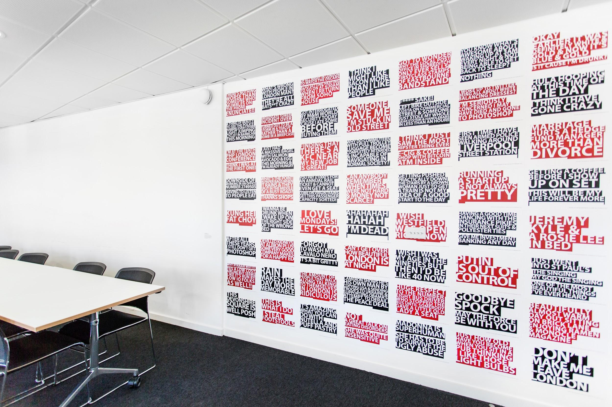
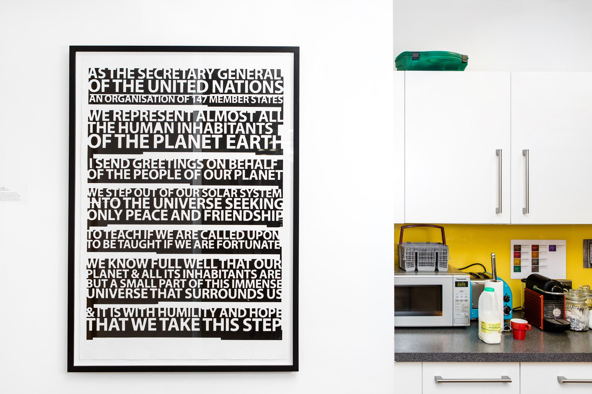
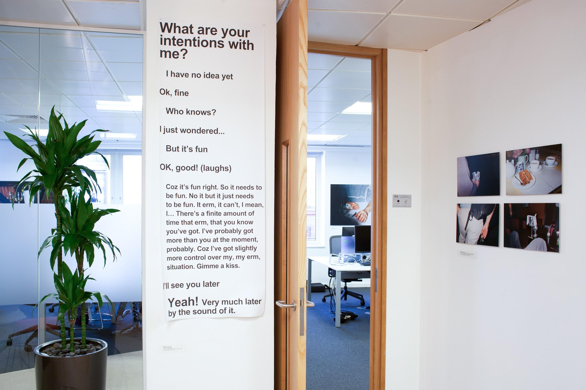
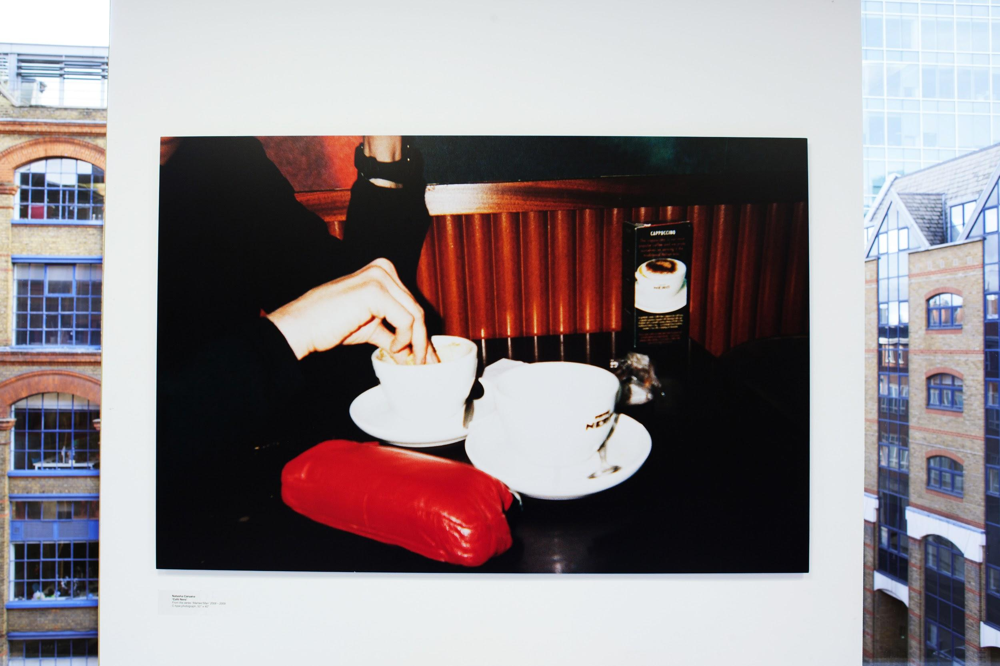

Call for proposals: LMAO 😹
Where is the humour in data? In these meme-fuelled, data-overloaded, statistically skewed times, we are asking how, when and where can data be funny.
Data infrastructures are revealing themselves to direct, redirect or misdirect our news, our governments and ultimately our cultures. How can we find the comedy – dark or light – in the flow of data surrounding us?
For the next Data as Culture art exhibition we are looking for artworks that interrogate data in ways that raise a wry smile, a full blown LOL, or a Black Mirror-style swipe at the future of open data.
Data as Culture is the art programme for the Open Data Institute. Exhibitions take place in the working environment, alongside ODI staff and visitors.
Selection criteria
We are looking for framed or unframed, wall or screen-based works in any media which:
- present data as a humorous material for ‘funny ha-ha’ or ‘funny peculiar’ art propositions
- consider the funny or absurd uses and misuses of data in emerging data and open data landscapes
- play with the growing number of visual gags in online environments, eg chihuahua or muffin
- raise critical questions or extend common experience of data in relation to the stated theme
- creatively engage with the innovative, material and experiential qualities of data and its broader impacts on culture and society
- inspire ODI staff and visitors to think differently about data and its ability to tell stories or frame questions
- contribute to a richer visual environment in the ODI space
Small objects may be accommodated. We are particularly keen to receive proposals that incorporate open data.
We are not looking for:
- direct data visualisation
- fragile, interactive works
- works that need assistance or complex instructions
- long narrative pieces
- continual externalised sound, although headphones are possible
- toxic or hazardous substances
The works will be seen within a working environment with a ‘captive’ audience, of staff so material that may be deemed obscene or offensive will not be considered.
The site
The exhibition programme will take place across a series of screens, walls, shelves and cabinets in the ODI headquarters in Shoreditch, London. Please see images of previous exhibitions below.
Audience
The audience are professional adults, who are often tech-savvy and time-poor. They will respond most strongly to an experience that is immediately impactful, striking or engaging. They are:
- people who work at the ODI
- people who work with the ODI, including SMEs, startups, university departments, government ministers and departments, officials, delegations and major multinational corporations
- members of the public (who will visit the exhibition by prior arrangement)
The ODI will also promote the project via its website and other social and traditional media channels.
Application process
Only applications submitted in the correct format via this online form will be accepted.
The form requests the following:
- Name
- Telephone number
- Biography: your practice, approach and experience (250 words maximum)
- A link to your website
- Description of the proposed work to include an outline of concept, description of visitor encounter, * materials and approx. dimensions (300–500 words)
- Link to image(s) of the proposed work – 6 maximum
- Link to video of the proposed work – 2 minutes maximum (optional)
- Link to press coverage and/or relevant articles (optional)
Eligibility
The call is open to all artists working with data, and we actively encourage applications from the groups below who are currently under-represented within our sector. These are artists from Black, Asian and other Minority Ethnic groups, artists who identify as LGBT, as well as Deaf and Disabled artists.
Schedule
Deadline for submissions: 23:59 on 26 April 2017 All applicants will be notified by or on 14 May 2017 Installation: September 2017
(Schedule subject to change)
Budget
Loan fee for existing works: £400 per selected work Production fees for new works: up to £1,200
Contact
Please contact Julie Freeman with any questions regarding the call [email protected]
 Image: Thomson & Craighead’s work installed at ODI HQ
 Image: Thomson & Craighead’s work installed at ODI HQ
Image: Thomson & Craighead’s work installed at ODI HQ
 Image: Thomson & Craighead’s work installed at ODI HQ
Image: Thomson & Craighead’s work installed at ODI HQ
 Image: Natasha Caruana’s work installed at ODI HQ
 Image: Natasha Caruana’s work installed at ODI HQ